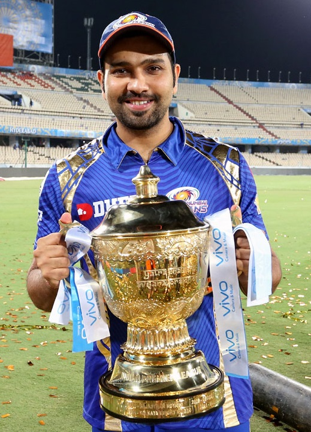
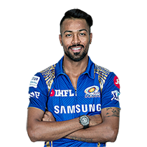
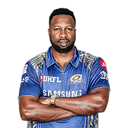
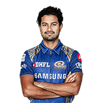
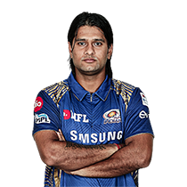
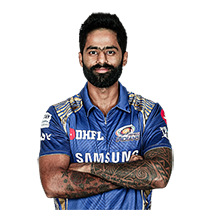
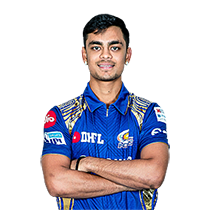
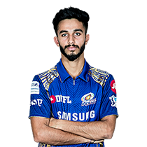
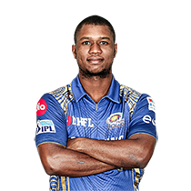

Captain: Rohit Sharma
Batting Style: Right-handed Nationality: Indian
DOB: 30 April 1987 Matches: 160
Runs: 4222 Wickets: 15
(Mumbai Indians Official Website)

Batting Style: Right-handed
Hardik Pandya
Batting Style: Right-handed
Nationality: Indian
DOB: 11 October 1993
Matches: 38
Runs: 425
Wickets: 10
Krunal Pandya
Batting Style: Right-handed
Nationality: Indian
DOB: 24 March 1991
Matches: 26
Runs: 520
Wickets: 16
Jasprit Bumrah
Batting Style: Right-handed
Nationality: Indian
DOB: 06 December 1993
Matches: 48
Runs: 25
Wickets: 46

Batting Style: Right-handed
Kieron Pollard
Batting Style: Right-handed
Nationality: West Indian
DOB: 12 May 1987
Matches: 124
Runs: 2343
Wickets: 56
Mitchell McClenaghan
Batting Style: Left-handed
Nationality: New Zealander
DOB: 11 June 1986
Matches: 41
Runs: 63
Wickets: 54
JP Duminy
Batting Style: Left-handed
Nationality: South African
DOB: 14 April 1984
Matches: 77
Runs: 1993
Wickets: 23
Pat Cummins
Batting Style: Right-handed
Nationality: Australian
DOB: 08 May 1993
Matches: 16
Runs: 77
Wickets: 17

Batting Style: Right-handed
Aditya Tare (wc)
Batting Style: Right-handed
Nationality: Indian
DOB: 07 November 1987
Matches: 35
Runs: 339
Wickets: 0

Batting Style: Left-handed
Saurabh Tiwary
Batting Style: Left-handed
Nationality: Indian
DOB: 30 December 1989
Matches: 81
Runs: 1276
Wickets: 0
Mustafizur Rahman
Batting Style: Left-handed
Nationality: Bangladeshi
DOB: 06 September 1995
Matches: 18
Runs: 0
Wickets: 17
Ben Cutting
Batting Style: Rigt-handed
Nationality: Australian
DOB: 30 January 1987
Matches: 9
Runs: 124
Wickets: 7

Batting Style: Right-handed
Suryakumar Yadav
Batting Style: Right-handed
Nationality: Indian
DOB: 14 September 1990
Matches: 56
Runs: 655
Wickets:0
Pradeep Sangwan
Batting Style: Right-handed
Nationality: Indian
DOB: 05 November 1990
Matches: 38
Runs: 24
Wickets: 35

Batting Style: Left-handed
Ishan Kishan
Batting Style: Left-handed
Nationality: Indian
DOB: 18 July 1998
Matches: 17
Runs: 359
Wickets: 0

Batting Style: Right-handed
Mayank Markande
Batting Style: Right-handed
Nationality: Indian
DOB: 11 November 1997
Matches: 1
Runs: 0
Wickets: 2

Batting Style: Left-handed